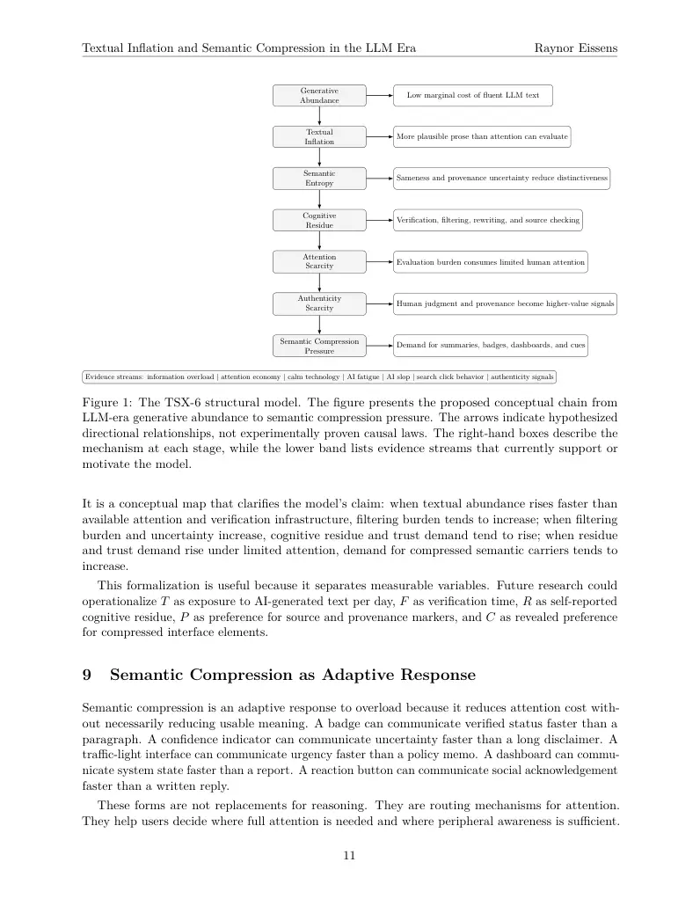

PDF page 1
Textual Inflation and Semantic Compression in the LLM Era: Evidence for Attention Scarcity under Generative Abundance
Raynor Eissens Independent Researcher TSX-6 Technical Report
2026
Abstract
Large language models have changed the economics of textual production by making fluent, plausible prose inexpensive to generate at scale. This paper develops the concept of textual inflation: the rapid increase in cheap, fluent, AI-generated text that reduces the marginal signaling value of individual text outputs while increasing filtering, verification, attention, and trust costs. It synthesizes prior work on information overload, cognitive load, attention scarcity, the attention economy, calm technology, glanceable interfaces, AI slop, AI fatigue, generative search, model collapse, and authenticity concerns. The central research question is whether large-scale LLM-generated textual abundance creates measurable pressure toward semantic compression: lower-bandwidth meaning carriers such as summaries, icons, reactions, badges, provenance marks, confidence displays, dashboards, haptics, ambient cues, and other glanceable signals that preserve enough relevance, state, trust, or intent while reducing attention cost. The reviewed evidence does not prove a deterministic replacement of text, nor does it establish color or chromatic systems as necessary solutions. It does, however, support a cautious structural claim: when generated text increases faster than available human attention and verification capacity, filtering burden and authenticity uncertainty rise, making curation, provenance, trust signals, and compressed semantic forms more valuable. TSX-6 is best understood as a conceptual synthesis that connects established overload theory with LLM-era evidence of AI fatigue, synthetic content saturation, lower click-through behavior, and authenticity erosion. Its contribution is a testable model linking generative abundance to semantic compression pressure.
Keywords: textual inflation; semantic compression; large language models; attention scarcity; AI fatigue; AI slop; information overload; authenticity; human-computer interaction; generative AI; semantic entropy; provenance.
1 Introduction
The public arrival of large language models (LLMs) changed not only how text is written but also the conditions under which text is evaluated. Earlier digital media environments already produced information overload, feed saturation, and attention competition. LLMs intensify this environment by reducing the cost of producing coherent-looking prose. A report, email, explanation,
1
PDF page 2
Textual Inflation and Semantic Compression in the LLM Era Raynor Eissens
marketing page, comment, summary, review, lesson plan, product description, or policy memo can now be generated quickly and repeatedly. The result is not simply more information. It is more fluent information, more plausible information, and more text that resembles expert or institutional language even when its evidential value remains uncertain.
This paper asks whether such abundance creates a new pressure within the information environ- ment. If fluent text was once relatively costly to produce, its presence carried at least some implicit signal of effort, expertise, or institutional process. When fluent text becomes cheap, that signal weakens. The marginal value of an individual text output declines, while the burden of determining whether the output is accurate, relevant, authentic, or worth reading increases. This mechanism is described here as textual inflation.
The concept does not mean that text disappears or that long-form reasoning becomes obsolete. Text remains a high-resolution medium for explanation, law, research, mathematics, history, and argument. The claim is narrower: under conditions of generative textual abundance, attention, trust, curation, and compression become more valuable. Users and systems increasingly need mechanisms that reduce cognitive load while preserving enough meaning to act. These mechanisms can include summaries, visual status indicators, badges, reaction systems, dashboards, confidence bars, haptics, ambient cues, and other lower-friction carriers of meaning.
The central research question is therefore: does large-scale LLM-generated textual abundance create measurable selection pressure toward semantic compression? The evidence reviewed in this paper suggests that several adjacent phenomena are converging. Foundational information-overload theory identifies attention as the scarce resource consumed by information [27]. Cognitive load theory explains why excessive or poorly structured information can overwhelm limited working memory [29]. The attention economy treats attention as a scarce social and economic resource [8, 12]. HCI research on calm and glanceable interfaces shows a long-standing design effort to move information from the center of attention into peripheral, low-friction channels [21, 32]. Recent discourse and studies on AI slop, workslop, and AI fatigue document cultural and workplace unease around the flood of generic AI-generated output [15, 17, 18]. Search-behavior evidence suggests that AI summaries alter the value chain of original text by reducing click-through behavior [1, 20]. Research on model collapse adds a related systemic concern: synthetic content can feed back into training systems and degrade distributions when not balanced by real data [24, 26].
The contribution of this paper is synthetic and conceptual. It does not claim that TSX-6 discovered attention scarcity, information overload, cognitive load, or calm technology. Nor does it claim that chromatic or color-based systems are proven solutions. Instead, it links older theories of overload and attention with recent LLM-era evidence into a single structural model: generative abundance produces textual inflation; textual inflation increases semantic entropy and cognitive residue; these pressures intensify attention and authenticity scarcity; and these scarcities create pressure toward semantic compression.
The paper contributes five elements. First, it provides definitions of textual inflation, semantic entropy, cognitive residue, semantic compression, and compression pressure. Second, it describes a methodology for a structured evidence review. Third, it compares TSX-6 to existing theories of overload, attention, cognitive load, calm technology, AI slop, and model collapse. Fourth, it proposes explicit hypotheses that can be tested in future empirical work. Fifth, it presents a structural model and novelty statement suitable for further refinement, critique, and experimental validation.
2
PDF page 3
Textual Inflation and Semantic Compression in the LLM Era Raynor Eissens
2 Methodology
This paper is a structured conceptual evidence review rather than a controlled empirical study. It synthesizes foundational theory, peer-reviewed literature, academic preprints, research-institute findings, industry reports, technology journalism, and public discourse in order to define and evaluate a proposed conceptual chain. The goal is not to estimate effect sizes or establish causality. The goal is to determine whether existing literature already formulates the full TSX-6 chain and whether the available evidence is consistent with the proposed model.
The review followed four steps. First, foundational literature was identified for established theories that explain overload and attention scarcity: information overload, cognitive load theory, attention economy, and calm technology. Second, LLM-era sources from 2023–2026 were reviewed for evidence of synthetic content saturation, AI fatigue, workplace oversight burden, AI-generated search summaries, model collapse, and authenticity concerns. Third, sources were classified by evidential strength. Peer-reviewed literature and research-institute reports were treated as stronger than journalism, blogs, LinkedIn posts, and forum discourse. Fourth, the reviewed sources were compared against the complete TSX-6 chain to assess novelty and prior-art overlap.
The evidence hierarchy used in this paper is as follows: (1) peer-reviewed academic literature; (2) academic books and conference papers; (3) research institutes and public-interest empirical studies; (4) academic preprints and working papers; (5) industry reports and technical analyses; (6) major journalism and trade journalism; and (7) blogs, social media, and anecdotal discourse. Sources in lower categories are not excluded, because they may document emerging language and cultural symptoms before peer-reviewed work appears. However, they are not treated as strong causal evidence.
This methodology has limits. The search was not a fully systematic review using preregistered database queries, inclusion criteria, and inter-rater coding. It is therefore inappropriate to claim absolute historical priority. The first-mover assessment in this paper is phrased cautiously: to the best of the author’s knowledge and within the reviewed corpus, the complete chain appears not to have been formulated as a single model before TSX-6. This is a novelty claim about synthesis and structure, not a claim that every component is new.
3 Definitions
3.1 Textual Inflation
Textual inflation is the rapid increase in cheap, fluent, AI-generated text that reduces the marginal signaling value of individual text outputs while increasing filtering, verification, attention, and trust costs. The term is intentionally economic in structure but semiotic in application. It describes a condition in which the supply of fluent symbolic output expands faster than the available human capacity to evaluate it. Under textual inflation, the problem is not only that there is more text. The problem is that more text now appears polished, plausible, and contextually fluent, even when its evidential status is weak.
Textual inflation differs from ordinary information overload. Traditional overload may be produced by email volume, database growth, news abundance, or feed saturation. Textual inflation is specifically tied to the generative capacity of LLMs and related systems. It refers to a decrease in the signaling value of fluent prose itself. When fluent prose becomes cheap, readers must devote more attention to judging relevance, origin, accuracy, and authenticity.
3
PDF page 4
Textual Inflation and Semantic Compression in the LLM Era Raynor Eissens
3.2 Semantic Entropy
Semantic entropy is the degradation of distinctiveness, trust, nuance, or interpretive stability under conditions of excessive symbolic output. It does not mean that all generated text is meaningless. Rather, it describes the increased difficulty of distinguishing meaningful, grounded, authored, and trustworthy outputs from generic, redundant, or low-accountability outputs. In LLM environments, semantic entropy may appear as sameness of tone, flattening of style, formulaic structure, repeated rhetorical patterns, or uncertainty about whether a text reflects human judgment.
3.3 Cognitive Residue
Cognitive residue is the leftover cognitive burden created by verification, filtering, rewriting, tool switching, and uncertainty management. A user may receive an apparently useful AI-generated answer but still need to inspect its accuracy, compare it with sources, remove generic phrasing, adapt it to context, verify factual claims, and decide whether it can be trusted. This residual burden remains after the apparent labor-saving benefit of generation. In workplace contexts, this may appear as the management of polished but low-substance output. In search and publishing contexts, it may appear as uncertainty over whether a summary, article, comment, or review is grounded.
3.4 Semantic Compression
Semantic compression is the use of lower-bandwidth meaning carriers that preserve relevance, state, trust, or intent while reducing attention cost. It does not necessarily mean reducing meaning. It means reducing the attention cost per unit of usable meaning. Examples include summaries, emoji, reaction buttons, icons, badges, status indicators, confidence bars, visual dashboards, traffic-light systems, haptics, ambient displays, glanceable UX, short human-curated signals, provenance markers, and compact state indicators.
Semantic compression is neutral with respect to medium. A compressed semantic carrier can be textual, visual, auditory, tactile, spatial, or procedural. A one-line summary, a warning badge, a checkmark, a vibration pattern, a color state, and a confidence indicator can all function as semantic compression if they reduce cognitive load while preserving actionable meaning. Chromatic systems, where color is used as a state carrier, are one possible subtype, not the necessary endpoint.
3.5 Compression Pressure
Compression pressure is the tendency for users, platforms, and interfaces to prefer lower-friction meaning carriers when text becomes too abundant. It is not a law of history or a proof of inevitability. It is a hypothesized selection pressure: when the volume of text increases and attention remains limited, systems that help users act with less cognitive overhead become more valuable.
4 Research Hypotheses
TSX-6 is presented as a conceptual model, but it can be translated into testable hypotheses. The following hypotheses are proposed for future empirical work:
H1. Increased exposure to AI-generated text is associated with increased perceived cognitive residue. This hypothesis predicts that users exposed to higher volumes of LLM-generated prose will report
4
PDF page 5
Textual Inflation and Semantic Compression in the LLM Era Raynor Eissens
more verification burden, source-checking effort, rewriting effort, uncertainty management, or fatigue than users exposed to lower volumes or clearly sourced human-authored text.
H2. Increased cognitive residue is associated with preference for compressed semantic carriers. This hypothesis predicts that when users experience higher filtering and verification burden, they will prefer summaries, badges, dashboards, trust marks, confidence indicators, visual states, or other compressed meaning carriers over long textual outputs for routine orientation and decision support.
H3. Increased textual abundance is associated with increased demand for trust and provenance signals. This hypothesis predicts that as users perceive more generic or AI-generated text in their environment, they will place greater value on author identity, source links, citations, human- authorship labels, editorial reputation, provenance metadata, and verification indicators.
These hypotheses are intentionally correlational in their first form. Future studies could test causal versions through controlled exposure experiments, interface comparisons, longitudinal diary studies, and field experiments in workplace, education, search, and platform contexts.
5 Relation to Existing Theories
5.1 Information Overload Theory
The intellectual foundation of TSX-6 begins with information overload. Herbert Simon’s observation that a wealth of information creates a poverty of attention remains central [27]. Information overload literature later developed extensive accounts of the causes, symptoms, and coping strategies of excessive information volume [3, 10]. These works explain why users and organizations require filtering, summarization, selection, and information management.
TSX-6 accepts this foundation but adds an LLM-specific condition. Information overload theory generally treats the problem as excess information volume. Textual inflation treats the problem as excess fluent symbolic production whose surface quality is no longer a reliable proxy for effort, expertise, or trustworthiness. The difference matters because LLM-generated text can appear structured, professional, and plausible even when it is redundant, weakly grounded, or synthetic.
5.2 Cognitive Load Theory
Cognitive load theory explains why limited working-memory resources can be overwhelmed by excessive, extraneous, or poorly structured information [29]. In TSX-6, cognitive residue is an LLM-era application of this principle. The burden does not necessarily occur while reading alone. It may occur after generation, when users must verify, adapt, repair, compare, and decide whether an AI output can be trusted. The location of labor shifts from production to evaluation.
5.3 Attention Economy
The attention economy treats attention as a scarce resource in environments of information abundance [8, 12]. TSX-6 extends this logic to generated text. If attention is scarce and LLMs radically expand the supply of text seeking attention, then text competes more intensely for human evaluation. Under this condition, the value of curation, source reputation, provenance, and compressed signals increases.
5
PDF page 6
Textual Inflation and Semantic Compression in the LLM Era Raynor Eissens
5.4 Calm Technology and Glanceable Interaction
Calm technology and ubiquitous computing provide a second major predecessor. Weiser and Brown argued that technology should move between the periphery and the center of attention, informing without constantly demanding focus [32]. Ambient-display and glanceable-interface research later developed related ideas: information can be conveyed through small cues, peripheral signals, visual states, badges, or ambient changes rather than through full textual explanation [21].
This prior art supports the semantic-compression side of TSX-6, but it does not arise from LLM- generated text abundance. Calm technology responded to earlier computational and informational overload. TSX-6 argues that LLM-era textual inflation creates a renewed and intensified reason to revisit calm, glanceable, peripheral, and low-bandwidth interface forms.
5.5 AI Slop and Synthetic Content Saturation
The recent discourse around AI slop names a cultural symptom of textual inflation. AI slop generally refers to low-quality, mass-produced, generic, synthetic content that floods platforms and feeds [15]. A 2025 academic study of AI-generated algorithmic virality examined synthetic content in TikTok and Instagram search results across several European countries and described the emergence of accounts producing generative AI content at scale [28]. Although detection methods, definitions, and platform samples vary, the phenomenon is relevant because it indicates that synthetic abundance is increasingly experienced as pollution, sameness, or trust degradation.
5.6 Model Collapse
Model collapse is not the same as textual inflation, but it is an adjacent theoretical warning. Shumailov and colleagues argue that recursively training generative models on generated data can make models forget tails of the original distribution [26]. Subsequent work has analyzed conditions under which synthetic data may or may not produce degradation [11, 24]. For TSX-6, model collapse matters because it gives a model-level analogue to semantic entropy: if synthetic outputs crowd the informational environment, both human readers and future models may face greater difficulty preserving diverse, grounded, human-originated signal.
6 Prior-Art Gap and Novelty Statement
The novelty of TSX-6 is not that it identifies information overload, attention scarcity, cognitive load, calm technology, AI slop, or authenticity concerns. Each of these exists in prior work. The novelty is the integration of these fields into a single LLM-era model in which cheap fluent text reduces the marginal signaling value of prose and increases the value of lower-friction meaning carriers.
The prior-art gap can be stated narrowly. Existing work separately addresses: (1) information overload and filtering; (2) attention scarcity and attention economics; (3) cognitive load and working- memory limits; (4) calm, ambient, and glanceable interface design; (5) AI slop and synthetic content saturation; (6) model collapse and synthetic data feedback; and (7) authenticity concerns around AI-generated work. In the reviewed corpus, however, these literatures do not appear to formulate the complete chain as a single structural model:
LLM text abundance →textual inflation →semantic entropy / cognitive residue →
6
PDF page 7
Textual Inflation and Semantic Compression in the LLM Era Raynor Eissens
Table 1: Relationship between TSX-6 and existing theories.
Theory or discourse What it explains LLM- specific? What TSX-6 adds
No Defines textual inflation as a generative-text-specific overload condition.
Information overload Excessive information can overwhelm limited processing capacity and reduce decision quality.
Attention economy Attention is scarce and becomes a central economic resource under abundance.
No Links AI verification, rewriting, and uncertainty management to cognitive residue.
No Connects cheap generated text to declining marginal signaling value of prose and rising curation value. Cognitive load theory Working memory is limited; poorly structured or excessive information creates cognitive burden.
No Treats calm and glanceable forms as semantic compression under LLM-era pressure.
Calm technology Interfaces can inform through peripheral, low-friction cues rather than constant central attention.
AI slop discourse Synthetic content saturation produces perceived banality, sameness, clutter, and trust decline.
Yes Places AI slop inside a broader structural model of textual inflation and compression pressure. Model collapse Recursive synthetic training can degrade model distributions under some conditions.
Yes Integrates older overload theories and recent generative-AI evidence into one testable chain.
Yes Provides an adjacent system-level analogue for semantic entropy and human-signal scarcity. TSX-6 Links LLM text abundance, textual inflation, semantic entropy, cognitive residue, attention scarcity, authenticity scarcity, and semantic compression pressure.
attention and authenticity scarcity →semantic compression pressure.
The strongest novelty claim is therefore synthetic and conceptual: TSX-6 names and connects a set of pressures that are visible across multiple fields but usually treated separately. It proposes that LLM-era textual abundance may accelerate a pre-existing migration toward compression, curation, provenance, and glanceable interface forms. This claim should be tested empirically and should not be treated as a completed proof.
7 Evidence Review: Textual Inflation in 2023–2026
7.1 AI Fatigue and AI Brain Fry
AI fatigue refers to tiredness, disengagement, or overload associated with repeated exposure to AI systems, AI-generated content, or AI-mediated work. The term overlaps with technostress, digital fatigue, cognitive overload, and workplace burnout, but it points to a more specific LLM-era pattern:
7
PDF page 8
Textual Inflation and Semantic Compression in the LLM Era Raynor Eissens
users are not merely using technology; they are repeatedly supervising, prompting, evaluating, correcting, and integrating generated output.
Older technostress research provides a strong theoretical base. Technostress studies identify overload, invasion, complexity, uncertainty, and insecurity as conditions under which technology use becomes psychologically costly [2, 23, 30]. AI fatigue can be read as a new subtype of technostress in which the stressor is not simply device use or connectivity but the continuous need to interact with intelligent-seeming outputs.
Recent AI-specific evidence remains emerging. Ragolane and Patel’s narrative review frames AI fatigue as related to overexposure to intelligent systems, cognitive strain, emotional exhaustion, saturation, decision paralysis, and erosion of agency [22]. Miranda, Parreno, and Rivera propose an academic AI-fatigue model based on 1,054 university students, identifying dimensions such as cognitive overload, motivational disengagement, moral unease, physical strain, and attentional drift [17]. These sources do not prove the TSX-6 model, but they support the plausibility of H1: sustained AI exposure can be associated with perceived cognitive residue.
Workplace reports also point in this direction. HBR-linked work on “workslop” describes AI-generated content that looks polished but lacks substance, shifting burden to recipients [18]. Reporting on “AI brain fry” describes mental fatigue among workers supervising multiple AI tools or iterating too extensively on AI outputs [35]. These are not substitutes for peer-reviewed longitudinal studies, but they are important symptoms of the evaluation burden that TSX-6 calls cognitive residue.
7.2 Workslop and the Productivity Paradox
The productivity paradox in generative AI is that automation of production can increase the burden of evaluation. A user may save time generating a memo, but another user may spend time determining whether that memo contains real analysis. A manager may receive polished AI- generated output that appears complete but requires rework. A developer may use a coding assistant that accelerates generation while increasing review burden. The output is fast; the judgment is not.
This is the core mechanism of cognitive residue. It helps reconcile two apparently conflicting findings. Generative AI can improve productivity in some controlled tasks and organizational settings [5, 19]. At the same time, poorly governed or excessive use can create low-substance output, verification burden, and coordination costs [18]. TSX-6 does not claim that AI text is intrinsically harmful. It claims that when generated text proliferates without adequate trust, provenance, and compression systems, the evaluation burden can rise.
7.3 AI Slop as Cultural Symptom
AI slop is important for TSX-6 because it is a cultural name for the devaluation of generic generated output. Knibbs reported that AI-generated content was appearing at scale on Medium and described much of it as banal [15]. Stanusch and colleagues’ study of AI-generated algorithmic virality provides a more systematic academic account of synthetic content circulating through social-media search results and agentic AI accounts [28]. These sources differ in method and evidential strength, but they converge on a common observation: generative tools lower the cost of producing platform content, and some actors use that low cost to pursue visibility.
The TSX-6 interpretation is structural rather than moral. Not all AI-generated content is slop. Some generated content is useful, clear, accessible, and well supervised. The relevant point is
8
PDF page 9
Textual Inflation and Semantic Compression in the LLM Era Raynor Eissens
that when low-cost generation becomes available to many actors, users must spend more effort distinguishing signal from generic or low-accountability output. The term “slop” is culturally imprecise, but it indexes a real attention problem: cheap content can increase the cost of finding trustworthy content.
7.4 Authenticity Erosion and Human-Signal Scarcity
Authenticity concerns form another evidence stream. Empirical work on perceptions of AI-generated text suggests that labels alone can shape evaluation. Zhu and colleagues found that raters favored content labeled as human-generated over content labeled as AI-generated, even when labels were swapped [34]. Kim and colleagues report an AI penalization effect in which people reduce compen- sation for workers who use AI, partly because they assign less credit to AI-assisted work [14]. These studies do not show that AI content is worse. They show that origin, authorship, and perceived human contribution affect value judgments.
Marketing and platform discourse points in the same direction. Digiday reporting describes renewed demand for authenticity and “messiness” after oversaturation of AI-generated content [16]. Public surveys and industry reports increasingly emphasize distrust of unclear AI-generated information and demand for human tone or attribution [33]. These sources should be interpreted cautiously, but they support H3: increased perceived textual abundance is associated with greater demand for provenance, source clarity, and human-authorship signals.
7.5 Search, Summaries, and Click Behavior
Search behavior provides one of the stronger empirical anchors. Pew Research Center found that Google users who encountered an AI summary clicked traditional search-result links less often than users who did not encounter such a summary; Pew also reported higher rates of session-ending behavior on search pages with AI summaries [20]. Ahrefs analysis associates AI Overviews with lower click-through rates for top-ranking pages [1]. A 2026 empirical study comparing Google Search, AI Overviews, and Gemini found that AI Overviews were displayed for a substantial share of representative queries and that generative search could retrieve sources differently from traditional search [13].
These findings do not prove textual inflation in full. They do show that generated summaries can alter attention allocation and the value chain of text. Users may accept compressed generated summaries rather than engaging source documents. This supports the claim that under abundance, the value of curation, trust, and summary interfaces increases. It also raises risks: compression without provenance can reduce source visibility and intensify authenticity concerns.
7.6 Evidence Classification
The reviewed evidence should be classified rather than flattened. It includes strong theoretical foundations, emerging empirical signals, and weaker but culturally relevant discourse. Table 2 distinguishes evidence categories.
9
PDF page 10
Textual Inflation and Semantic Compression in the LLM Era Raynor Eissens
Table 2: Evidence categories used in the TSX-6 review.
Category Examples Status in TSX-6
Established theory Simon; cognitive load theory; attention economy; information overload; calm technology. Strong conceptual foundation. Peer-reviewed or academic empirical work Noy and Zhang; Brynjolfsson et al.; Shumailov et al.; technostress studies; AI perception studies.
Strong to moderate, depending on topic and generalizability. Research-institute or technical data Pew click behavior; Ahrefs click-through analysis; generative search benchmark studies. Strong for observed behavior; cautious for causal interpretation. Academic preprints AI fatigue models; AI slop/virality studies; generative search disruption studies. Useful emerging evidence; not all peer reviewed. Industry and workplace reports Workslop, brain fry, adoption/fatigue surveys. Symptom mapping; not causal proof. Journalism and public discourse Wired, Digiday, platform discourse, marketing discourse. Useful for cultural symptoms and terminology; weaker evidence.
8 The TSX-6 Structural Model
The model begins with generative abundance: the capacity to produce large volumes of fluent text at low marginal cost. This abundance produces textual inflation when the supply of plausible prose expands faster than human attention, trust infrastructure, and verification capacity. Textual inflation then contributes to semantic entropy: sameness, provenance uncertainty, loss of distinctiveness, and lower interpretive stability.
Semantic entropy creates cognitive residue because users must verify, filter, compare, rewrite, and manage uncertainty. Cognitive residue intensifies attention scarcity by consuming the limited attention that information requires. Attention scarcity then interacts with authenticity scarcity: when synthetic text is abundant and generic, accountable human judgment becomes more valuable. Under these combined conditions, users, platforms, and interfaces experience semantic compression pressure: pressure to provide meaning in forms that are faster to inspect, easier to trust, and less costly to evaluate.
8.1 Conceptual Formalization
Let T represent perceived textual abundance, A available user attention, F filtering and verification burden, R perceived cognitive residue, P demand for provenance and trust signals, and C demand for semantic compression. TSX-6 proposes the following conceptual relationships:
F = f(T/A, Q, V ), (1)
R = g(F, S, U), (2)
P = h(T, U, O), (3)
C = k(R, P, A−1). (4)
Here Q represents perceived quality variability, V represents verification difficulty, S represents sameness or semantic entropy, U represents uncertainty about origin or trustworthiness, and O represents opacity of authorship or provenance. The notation is not a proven mathematical law.
10
PDF page 11
Textual Inflation and Semantic Compression in the LLM Era Raynor Eissens
Low marginal cost of fluent LLM text
Generative Abundance
More plausible prose than attention can evaluate
Textual Inflation
Sameness and provenance uncertainty reduce distinctiveness
Semantic Entropy
Verification, filtering, rewriting, and source checking
Cognitive Residue
Evaluation burden consumes limited human attention
Attention Scarcity
Human judgment and provenance become higher-value signals
Authenticity Scarcity
Demand for summaries, badges, dashboards, and cues
Semantic Compression Pressure
Evidence streams: information overload | attention economy | calm technology | AI fatigue | AI slop | search click behavior | authenticity signals
Figure 1: The TSX-6 structural model. The figure presents the proposed conceptual chain from LLM-era generative abundance to semantic compression pressure. The arrows indicate hypothesized directional relationships, not experimentally proven causal laws. The right-hand boxes describe the mechanism at each stage, while the lower band lists evidence streams that currently support or motivate the model.
It is a conceptual map that clarifies the model’s claim: when textual abundance rises faster than available attention and verification infrastructure, filtering burden tends to increase; when filtering burden and uncertainty increase, cognitive residue and trust demand tend to rise; when residue and trust demand rise under limited attention, demand for compressed semantic carriers tends to increase.
This formalization is useful because it separates measurable variables. Future research could operationalize T as exposure to AI-generated text per day, F as verification time, R as self-reported cognitive residue, P as preference for source and provenance markers, and C as revealed preference for compressed interface elements.
9 Semantic Compression as Adaptive Response
Semantic compression is an adaptive response to overload because it reduces attention cost with- out necessarily reducing usable meaning. A badge can communicate verified status faster than a paragraph. A confidence indicator can communicate uncertainty faster than a long disclaimer. A traffic-light interface can communicate urgency faster than a policy memo. A dashboard can commu- nicate system state faster than a report. A reaction button can communicate social acknowledgement faster than a written reply.
These forms are not replacements for reasoning. They are routing mechanisms for attention. They help users decide where full attention is needed and where peripheral awareness is sufficient.
11

PDF page 12
Textual Inflation and Semantic Compression in the LLM Era Raynor Eissens
In this sense, semantic compression inherits the logic of calm technology: not everything should occupy the center of attention at all times.
Examples include emoji and reactions for social acknowledgement; badges and indicators for trust, status, or provenance; dashboards and progress rings for state; traffic-light systems for urgency; summaries for condensation; confidence displays for uncertainty; haptic cues for silent notification; ambient displays for peripheral awareness; and possible chromatic systems for compact state representation. The TSX-6 claim does not privilege any single implementation. Color may be useful in some designs, but the general category is broader than color.
9.1 Compression Is Not Anti-Text
Semantic compression should not be misread as a rejection of language. Compression supports language by reducing the number of moments in which full prose must be inspected. A good compressed carrier can route the reader toward the right text, preserve attention for high-stakes reasoning, and make long-form documents easier to navigate. In this sense, semantic compression is not the enemy of textual depth. It is an attention-preserving layer around textual depth.
9.2 Compression Without Provenance Is Risky
Generated summaries can also create new problems. If a summary replaces source engagement without preserving provenance, it may reduce accountability and weaken the incentive to produce durable original work. If a badge or score is opaque, it can become a false signal. If a dashboard compresses too aggressively, it can hide ambiguity. TSX-6 therefore treats semantic compression and provenance as linked: the most useful compressed carriers are not merely shorter; they preserve enough origin, confidence, and context to support responsible action.
10 Counterarguments and Boundary Conditions
10.1 AI Can Improve Text Quality
A major counterargument is that AI can improve average text quality. Evidence supports this in some settings. Noy and Zhang found productivity gains in writing tasks using generative AI [19]. Brynjolfsson, Li, and Raymond found that generative AI assistance increased productivity in customer support, especially for less experienced workers [5]. These findings matter. They show that textual abundance is not automatically harmful.
TSX-6 is compatible with these findings. The claim is not that AI text is bad. The claim is that a lower cost of producing fluent text changes evaluation conditions. High-quality AI-assisted writing may coexist with textual inflation. Indeed, if AI improves some outputs while flooding environments with many more outputs, the need for trust, curation, and compression may increase rather than decrease.
10.2 Summaries Can Increase Access
A second counterargument is that AI summaries can make information more accessible. This is true. Summaries can help users with limited time, low literacy, disability, language barriers, or complex search tasks. They can reduce friction and improve navigation. The TSX-6 concern is
12
PDF page 13
Textual Inflation and Semantic Compression in the LLM Era Raynor Eissens
not summary itself. The concern is summary without provenance, source visibility, or adequate uncertainty signaling.
The Pew and Ahrefs findings should therefore be interpreted carefully. Lower click-through is not automatically bad from the user’s perspective. It may mean users found what they needed faster. But from a publishing and knowledge-ecosystem perspective, lower click-through may also reduce source visibility, revenue, and accountability. TSX-6 treats this as a trade-off, not a simple harm.
10.3 Compression Predates LLMs
A third counterargument is that compression trends long predate LLMs. Emoji, icons, dashboards, badges, traffic-light systems, haptics, and ambient displays existed before ChatGPT. This is correct. TSX-6 does not claim that LLMs invented semantic compression. It argues that LLM-generated abundance may accelerate pre-existing compression dynamics by increasing the filtering burden around text.
10.4 Not All AI Content Causes Inflation
Not all AI-generated content contributes equally to textual inflation. Carefully edited, cited, accountable, and context-specific AI-assisted writing may be valuable. The inflationary risk is highest when generation is cheap, high-volume, low-accountability, weakly sourced, stylistically generic, and distributed into already overloaded environments.
11 Discussion
11.1 Human-Computer Interaction
For HCI, TSX-6 suggests that text-heavy interaction may not remain the default optimal form for every AI-mediated task. As LLMs produce more text, the interface problem shifts from generating language to managing attention. Good interfaces may increasingly need to summarize, rank, compress, indicate confidence, display provenance, and support peripheral awareness.
11.2 AI Assistants and Agents
AI assistants and agents should not be evaluated only by how much text they can produce. In an environment of textual inflation, better support may mean producing less text, offering clearer status, showing uncertainty, preserving provenance, and compressing state. Agentic systems may need dashboards, state indicators, action logs, reversible summaries, and trust cues rather than long prose after every action.
11.3 Search and Publishing
AI summaries may reduce direct engagement with source text, as suggested by Pew, Ahrefs, and generative-search research [1, 13, 20]. This creates a tension. Summaries reduce user effort, but they may also reduce traffic to original sources and weaken incentives for durable human- authored publication. As generated summaries become common, curation, reputation, citation, and provenance may become more valuable.
13
PDF page 14
Textual Inflation and Semantic Compression in the LLM Era Raynor Eissens
11.4 Social Platforms
On social platforms, AI slop and generic content may create pressure toward authenticity markers, verified authorship, human-made labels, provenance systems, or design forms that reduce the need to inspect every post in depth. The risk is that authenticity itself becomes performative or gamed. Compression systems therefore need governance, transparency, and reversibility.
11.5 Ambient and Runtime Interfaces
Future ambient and runtime interfaces may use situational, low-friction forms instead of fixed app screens or long textual outputs. This may include state displays, contextual summaries, symbolic cues, voice confirmations, haptics, or environmental signals. TSX-6 does not prove that such interfaces will dominate. It suggests that the pressure toward them increases when generated text becomes abundant and attention remains limited.
12 First-Mover Assessment
To the best of the author’s knowledge, and within the reviewed literature and public discourse, TSX-6 appears to be best classified as a substantially novel conceptual synthesis rather than a completely unprecedented idea in every component. The model draws on well-established prior work. Information overload, cognitive load, attention scarcity, calm technology, and attention economy are not new. AI slop, workslop, model collapse, generative search, and AI-authenticity concerns are also active emerging areas.
What appears distinctive is the formulation of the complete chain: LLM text abundance leads to textual inflation; textual inflation produces semantic entropy and cognitive residue; cognitive residue intensifies attention scarcity and authenticity scarcity; and these pressures increase demand for semantic compression. The claim should be phrased cautiously: no reviewed source was found that explicitly formulates this complete chain as a single structural model. This does not prove that no such formulation exists elsewhere. It supports a defensible novelty statement: TSX-6 contributes a named, integrated, testable framework for a set of LLM-era pressures that existing literatures discuss separately.
13 Limitations
This paper has several limitations. First, it is a conceptual synthesis, not a controlled empirical experiment. It proposes hypotheses and a structural model but does not test them directly. Second, some evidence comes from journalism, industry reports, blogs, LinkedIn posts, and public discourse. These sources are useful for mapping symptoms and language, but they are weaker than peer- reviewed empirical studies. Third, causality is not fully established. AI fatigue, search behavior, authenticity concerns, and productivity problems are multi-causal.
Fourth, the evidence does not prove that generated text universally reduces value. High-quality AI-supported writing may increase clarity, access, and productivity in many contexts. Fifth, semantic compression may take many forms, and no single form is identified as necessary or inevitable. Sixth, chromatic or color-based systems are not proven by this paper. They remain one possible implementation layer within a broader compression category. Seventh, more longitudinal,
14
PDF page 15
Textual Inflation and Semantic Compression in the LLM Era Raynor Eissens
experimental, and cross-cultural research is needed to measure textual inflation, semantic entropy, filtering burden, and compression efficiency.
14 Future Experimental Design
Future research should operationalize textual inflation by measuring the rate of generated-text exposure, perceived redundancy, verification time, trust judgments, and source-engagement patterns. Longitudinal studies could examine whether sustained exposure to AI-generated text increases cognitive fatigue or shifts user preference toward compressed signals. Experiments could compare text-heavy AI interfaces with compressed state-based interfaces across tasks such as email triage, search, workplace reporting, education, and agent monitoring.
A minimal experimental design could expose participants to three conditions: human-authored source text, AI-generated long-form text, and AI-generated text accompanied by semantic- compression supports such as provenance badges, confidence indicators, and state summaries. Dependent variables could include task completion time, perceived cognitive residue, trust cali- bration, source-checking behavior, recall accuracy, and preference for compressed carriers. Such a design would test H1 and H2 directly.
A longitudinal field study could ask knowledge workers to record daily exposure to AI-generated text, number of AI tools used, verification time, perceived fatigue, and preference for summaries or dashboards. This would help separate ordinary workload from AI-specific cognitive residue. A search study could compare AI summary interfaces with and without source-provenance cues to test whether compression plus provenance preserves user efficiency while reducing source invisibility.
Additional work should develop metrics for semantic entropy and compression efficiency. Semantic entropy might be measured through perceived sameness, loss of source distinctiveness, reduced author recognition, uncertainty about origin, or increased verification time. Compression efficiency might be measured as usable meaning retained per unit of attention cost. HCI prototypes could test dashboards, confidence indicators, provenance badges, haptic cues, and ambient states against long textual outputs.
Acknowledgements
The author acknowledges the broader bodies of work on information overload, cognitive load, attention economics, calm technology, human-computer interaction, generative AI, and digital authenticity that make this synthesis possible. This paper originated as TSX-6, a technical report in an independent research series.
15 Conclusion
Text is not disappearing. It remains one of the most powerful media for reasoning, explanation, and institutional memory. The TSX-6 claim is more specific: when generated text becomes abundant, the marginal signaling value of fluent text declines while the value of attention, trust, curation, provenance, and compression rises. LLMs make text easier to produce, but they do not make human attention easier to expand.
The reviewed evidence supports a cautious framework rather than a proof. Foundational
15
PDF page 16
Textual Inflation and Semantic Compression in the LLM Era Raynor Eissens
information-overload theory explains why attention becomes scarce under abundance. Calm technol- ogy and glanceable-interface research show that lower-friction carriers have long been used to reduce attention burden. Recent AI-slop, AI-fatigue, workslop, search, model-collapse, and authenticity evidence suggests that LLM-generated abundance is producing new pressures around trust, filtering, sameness, source visibility, and human signal scarcity. TSX-6 connects these fields into a structural model: generative abundance creates textual inflation; textual inflation increases semantic entropy and cognitive residue; these pressures intensify attention and authenticity scarcity; and the resulting environment creates selection pressure toward semantic compression.
The framework should be tested, refined, and limited by evidence. It should not be used to claim that color replaces text, that AI text is inherently valueless, or that semantic compression is inevitable. Its strongest defensible claim is that LLM-era textual abundance creates measurable pressure toward lower-bandwidth, trustworthy, attention-preserving semantic carriers.
References
[1] Ahrefs. (2026). Update: AI Overviews reduce clicks by 58%. Online technical analysis. https: //ahrefs.com/blog/ai-overviews-reduce-clicks-update/.
[2] Ayyagari, R., Grover, V., and Purvis, R. (2011). Technostress: Technological antecedents and implications. MIS Quarterly, 35(4), 831–858. https://doi.org/10.2307/41409963.
[3] Bawden, D. and Robinson, L. (2009). The dark side of information: Overload, anxiety and other paradoxes and pathologies. Journal of Information Science, 35(2), 180–191. https: //doi.org/10.1177/0165551508095781.
[4] Bender, E. M., Gebru, T., McMillan-Major, A., and Shmitchell, S. (2021). On the dangers of stochastic parrots: Can language models be too big? Proceedings of the 2021 ACM Conference on Fairness, Accountability, and Transparency, 610–623. https://doi.org/10.1145/3442188. 3445922.
[5] Brynjolfsson, E., Li, D., and Raymond, L. R. (2025). Generative AI at work. The Quarterly Journal of Economics. Online first / working-paper version also available as arXiv:2304.11771.
https://arxiv.org/abs/2304.11771.
[6] Candeto, J. (2024). The price of attention. Phronesis Fund. https://phronesisfund.substa ck.com/p/the-price-of-attention.
[7] Clementson, J. (2024). How to understand AI fatigue and why people are starting to tune out. Azura Magazine. https://azuramagazine.com/articles/how-to-understand-ai-fatigue -and-why-people-are-starting-to-tune-out.
[8] Davenport, T. H. and Beck, J. C. (2001). The attention economy: Understanding the new currency of business. Harvard Business School Press.
[9] Dell’Acqua, F., McFowland, E., Mollick, E. R., Lifshitz-Assaf, H., Kellogg, K., Rajendran, S., Krayer, L., Candelon, F., and Lakhani, K. R. (2023). Navigating the jagged technological frontier: Field experimental evidence of the effects of AI on knowledge worker productivity and quality. Harvard Business School working paper. https://www.hbs.edu/faculty/Pages/it em.aspx?num=64700.
16
PDF page 17
Textual Inflation and Semantic Compression in the LLM Era Raynor Eissens
[10] Eppler, M. J. and Mengis, J. (2004). The concept of information overload: A review of literature from organization science, accounting, marketing, MIS, and related disciplines. The Information Society, 20(5), 325–344. https://doi.org/10.1080/01972240490507974.
[11] Gerstgrasser, M. et al. (2024). Is model collapse inevitable? Breaking the curse of recursion by accumulating real and synthetic data. arXiv:2404.01413. https://arxiv.org/abs/2404.01413.
[12] Goldhaber, M. H. (1997). The attention economy and the net. First Monday, 2(4). https: //doi.org/10.5210/fm.v2i4.519.
[13] Grossman, R., Liu, S., Chen, M. K., Smith, M., Borcea, C., and Chen, Y. (2026). How generative AI disrupts search: An empirical study of Google Search, Gemini, and AI Overviews. arXiv:2604.27790. https://arxiv.org/abs/2604.27790.
[14] Kim, J., Schweitzer, S., Riedl, C., and De Cremer, D. (2025). People reduce workers’ compensa- tion for using artificial intelligence (AI). arXiv:2501.13228. https://arxiv.org/abs/2501.1 3228.
[15] Knibbs, K. (2024). AI slop is flooding Medium. Wired. https://www.wired.com/story/ai-g enerated-medium-posts-content-moderation/.
[16] Mercante, A. (2026). After an oversaturation of AI-generated content, creators’ authenticity and messiness are in high demand. Digiday. https://digiday.com/media/after-an-overs aturation-of-ai-generated-content-creators-authenticity-and-messiness-are-i n-high-demand/.
[17] Miranda, J. P. P., Parreno, E. B., and Rivera, J. G. (2026). Defining AI fatigue in academic con- texts: Dimensions, indicators, and a stage-based model using grounded theory. arXiv:2605.23123.
https://arxiv.org/abs/2605.23123.
[18] Niederhoffer, K., Kellerman, G. R., Lee, A., Liebscher, A., and Rapuano, K. (2025). AI-generated “workslop” is destroying productivity. Harvard Business Review. https://hbr.org/.
[19] Noy, S. and Zhang, W. (2023). Experimental evidence on the productivity effects of generative artificial intelligence. Science, 381(6654), 187–192. https://doi.org/10.1126/science.adh2 586.
[20] Pew Research Center. (2025). Google users are less likely to click on links when an AI summary appears in the results. https://www.pewresearch.org/short-reads/2025/07/22/google-u sers-are-less-likely-to-click-on-links-when-an-ai-summary-appears-in-the-res ults/.
[21] Pousman, Z. and Stasko, J. (2006). A taxonomy of ambient information systems: Four patterns of design. Proceedings of the Working Conference on Advanced Visual Interfaces, 67–74. https://doi.org/10.1145/1133265.1133277.
[22] Ragolane, M. and Patel, S. (2025). Too much, too fast: Understanding AI fatigue in the digital acceleration era. International Journal of Arts, Humanities and Social Sciences, 6(8), 53–60.
[23] Ragu-Nathan, T. S., Tarafdar, M., Ragu-Nathan, B. S., and Tu, Q. (2008). The consequences of technostress for end users in organizations: Conceptual development and empirical validation. Information Systems Research, 19(4), 417–433. https://doi.org/10.1287/isre.1070.0165.
17
PDF page 18
Textual Inflation and Semantic Compression in the LLM Era Raynor Eissens
[24] Seddik, M. E. A., Chen, S.-W., Hayou, S., Youssef, P., and Debbah, M. (2024). How bad is training on synthetic data? A statistical analysis of language model collapse. arXiv:2404.05090.
https://arxiv.org/abs/2404.05090.
[25] Shibumi. (2026). AI fatigue statistics 2026: Data on burnout, ROI and tool sprawl. https: //shibumi.com/blog/ai-fatigue-statistics-2026/.
[26] Shumailov, I., Shumaylov, Z., Zhao, Y., Gal, Y., Papernot, N., and Anderson, R. (2024). AI models collapse when trained on recursively generated data. Nature, 631, 755–759. https: //doi.org/10.1038/s41586-024-07566-y.
[27] Simon, H. A. (1971). Designing organizations for an information-rich world. In M. Greenberger (Ed.), Computers, communications, and the public interest (pp. 37–72). Johns Hopkins Press.
[28] Stanusch, N., Degeling, M., Romano, S., Cetin, R. B., Schueler, M., and Semenzin, S. (2025). AI-generated algorithmic virality. arXiv:2508.01042. https://arxiv.org/abs/2508.01042.
[29] Sweller, J. (1988). Cognitive load during problem solving: Effects on learning. Cognitive Science, 12(2), 257–285. https://doi.org/10.1016/0364-0213(88)90023-7.
[30] Tarafdar, M., Tu, Q., Ragu-Nathan, B. S., and Ragu-Nathan, T. S. (2007). The impact of technostress on role stress and productivity. Journal of Management Information Systems, 24(1), 301–328. https://doi.org/10.2753/MIS0742-1222240109.
[31] Weiser, M. (1991). The computer for the 21st century. Scientific American, 265(3), 94–104. ht tps://www.scientificamerican.com/article/the-computer-for-the-21st-century/.
[32] Weiser, M. and Brown, J. S. (1996). Designing calm technology. Xerox PARC / conference paper. https://people.csail.mit.edu/rudolph/Teaching/weiser.pdf.
[33] WordPress VIP. (2026). Consumer trust, AI-generated information, and human-centered web content. Online survey report; public summaries reported by technology press.
[34] Zhu, T., Weissburg, I., Zhang, K., and Wang, W. Y. (2024). Human bias in the face of AI: The role of human judgement in AI-generated text evaluation. arXiv:2410.03723. https: //arxiv.org/abs/2410.03723.
[35] Axios. (2026). AI overuse could spark “brain fry,” new research finds. https://www.axios.co m/2026/03/06/ai-chatgpt-claude-jobs-brain-fry.
18